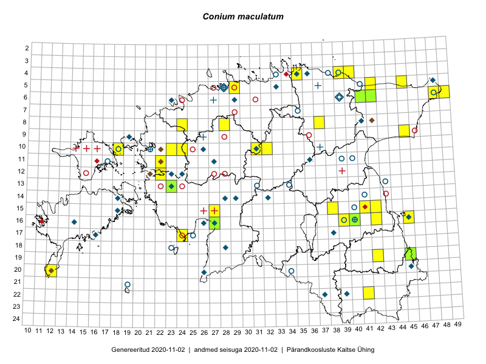

Conium maculatum
Uuendatud: 2016-12-02
Kaardile koondatud taksonid: Conium maculatum L.

Kaart põhineb 32 kirjel, neist vaatlusi 31 ja eksemplare 1. Taksonit on leitud 21 ruudust.
Kuvatud viited 20 esimesele andmebaasikirjele, ülejäänud PlutoFis
- Tiit Hallikma, Toomas Kukk: 2015-07-21: 05-45: ala
- Peedu Saar, Liina Oja: 2015-07-24: 09-45: GPS punkt
- Peedu Saar: 2015-07-14: 15-38: GPS punkt
- Peedu Saar: 2015-07-14: 15-38: GPS punkt
- Peedu Saar, Eerik Leibak: 2015-07-30: 15-42: GPS punkt
- Ott Luuk, Jaak-Albert Metsoja: 2015-05-27: 12-22: ala
- Peedu Saar: 2015-07-14: 15-38: ala
- Peedu Saar, Eerik Leibak: 2015-07-30: 15-42: ala
- Ott Luuk, Toivo Sepp: 2015-07-29: 10-31: GPS punkt
- Toomas Kukk, Eerik Leibak: 2015-07-29: 16-45: ala
- Peedu Saar, Sander Laherand: 2015-05-30: 06-42: ala
- Toomas Kukk, Tiit Hallikma: 2015-07-24: 06-41: ala
- Toomas Kukk, Tiit Hallikma: 2015-07-21: 05-45: GPS punkt
- Toomas Kukk, Eerik Leibak: 2015-07-29: 16-45: GPS punkt
- Toomas Kukk, Eerik Leibak: 2015-07-29: 16-45: GPS punkt
- Peedu Saar, Liina Oja: 2015-07-24: 09-45: ala
- Tiit Hallikma, Toomas Kukk: 2015-07-24: 06-41: GPS punkt
- Rein Kalamees, Kersti Püssa: 2015-05-31: 04-35: ala
- Peedu Saar: 2015-06-05: 16-42: GPS punkt
- Toomas Kukk, Timo Luhamäe, Kersti Tambets, Sten Mander, Janika Sammasto: 2014-07-29: 19-45: ala